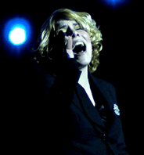

Het orkest voor dit project bestaat uit harmonieorkest Auletes van ESMG Quadrivium, aangevuld met gastmuzikanten. Het orkest zal samen werken met twee professionele solisten. Eén van Nederlands beste saxofonisten Johan van der Linden zal vernieuwend werk ten gehore brengen op saxofoon. Johan is onder meer bekend als sopraansaxofonist van het Aurelia saxofoonkwartet. Zangeres Merel Koman zal met haar prachtige stem hemelse sferen oproepen.
Auletes
Auletes is het harmonieorkest van Eindhovens Studenten Muziek Gezelschap Quadrivium. Sinds oktober staat het orkest onder leiding van Jos Schroevers. Auletes bestaat uit ongeveer 50 muzikanten, maar voor dit project wordt het orkest aangevuld tot ongeveer 80 muzikanten. De muziek die Auletes repeteert en uitvoert is zeer gevarieerd, van de klassieke werken tot het lichtere repertoire van film- en musicalmuziek. De symfonische blaasmuziek neemt een speciale plek in het repertoire in. Mede door dit brede repertoire is het elk jaar weer een uitdaging om een muzikale topprestatie te leveren.
Jos Schroevers
Sinds oktober 2008 is Jos Schroevers dirigent bij Auletes. Jos begon met het studeren van slagwerk aan het Sweelinck conservatorium te Amsterdam. Toen Jos in zijn 3e jaar conservatorium een baan kreeg bij de FKKL als paukenist, meldde hij zich aan voor de opleiding HaFa directie aan het Brabants conservatorium te Tilburg. Daar voltooide hij zowel zijn HaFa directie eerste fase als zijn opleiding slagwerk. Daarna maakte hij zijn opleiding compleet door de studie 2e fase HaFa directie (master) af te ronden bij Alex Schillings aan het Koninklijk Conservatorium te Den Haag.
Johan van der Linden
In 1983 studeerde Johan af als uitvoerend musicus saxofoon aan het Sweelinck Conservatorium te Amsterdam. In 1982 richtte hij samen met zijn collegae André Arends, Arno Bornkamp en Willem van Merwijk het Aurelia Saxofoonkwartet op. Dit Saxofoonkwartet is uitgegroeid tot één van de toon aangevende kamermuziekensembles in de wereld. Het Aurelia heeft 9 Cd’s op zijn naam staan en vele buitenlandse tournees naar o.a. Ierland, Duitsland, Canada, Indonesië, Amerika en Japan. Naast zijn werk als hoofdvak docent Saxofoon aan het Conservatorium in Enschede en Utrecht is Van der Linden werkzaam als freelance saxofonist bij: het Nederlands Blazers Ensemble, Koninklijk Concertgebouw Orkest, Rotterdams Philharmonisch Orkest, Residentie Orkest en het Radio Philharmonisch Orkest.
Merel Koman
Merel Koman (1987) begon al op vroege leeftijd met zingen. Tijdens de basisschool zong in het kerkkoortje en deed ze mee met lokale talentenjachten. Op haar 16e nam ze deel aan het populaire tv-programma 'Idols' en drong door tot de laatste rondes. In diezelfde tijd kwam ze bij Gé Titulaer terecht, die haar al snel naar het conservatorium stuurde. Merel was 17 toen ze begon met de vooropleiding jazz & pop aan het conservatorium van Utrecht. Inmiddels is ze 3e jaars student en kreeg les van o.a. Gé Titulaer, Herman van Doorn en Lydia van Dam. Masterclasses volgde ze bij onder andere Mark Murphy, Denise Jannah en Richard Bona. Naast haar studie speelt Merel veel met diverse pop- en jazz formaties. Ook presenteert Merel al meer dan twee jaar het populaire kinderprogramma ‘Kinjerkraom' op de Limburgse televisiezender L1.